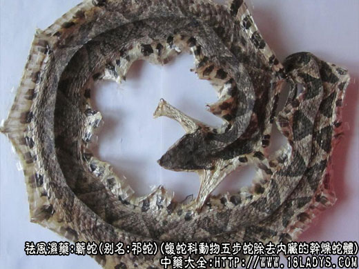

本品为常用中药。始载《开宝本草》，原名白花蛇，据《本草纲目》记载，此即指蕲蛇。今市场商品两种：蕲蛇为五步蛇。白花蛇为银环蛇的幼体，古代本草未见收载。
别名：棋盘蛇、祁蛇。
来源：系脊椎动物门爬行纲有鳞目，蝮蛇科动物五步蛇除去内脏的干燥蛇体。野生于山区森林中。
产地：主产于江西、浙江、福建、湖南、台湾等地。
采收：于4～8月间捕捉，6月较多，捕后加工分“祁蛇”与“祁蛇鲞”两种，前者系将蛇腹剖开除去内脏，原条盘成盘状烘干，后者去净内脏，用竹片撑开盘成圆形，以炭烘干即可。
性状鉴别：本品成圆盘形。头部呈三角形而扁平，鼻尖端向上，口较宽大，习称“龙头虎口”，上颚有长毒牙一对。背部棕褐色，密被菱形鳞片，有纵向排列的24个方形灰白花纹习称“方胜纹”。腹部色白，鳞片较大，有24个圆珠状黑班，习称“念珠班”。尾部渐细，未端角质三角形，习称“佛指甲”腹内部黄白色。脊椎骨显著突起，两侧具多数肋骨。气微腥，味微咸。
以个大，头尾齐全，花纹斑点明显者为佳。
炮制：剁去头洗净，黄酒闷润切块称祁蛇。清水浸润，用笼屉蒸软，去掉皮骨，切段，黄酒浸泡后晒干为祁蛇肉。
性味：甘、咸、温。头部有毒。
归经：入肝经。
功能：散风通络，镇痉，攻毒。
主治：半身不遂，四肢拘挛，关节酸痛，疥瘌恶疮等症。
注：蕲蛇为毒蛇。头部毒腺中含有多量的出血性毒，少量神经性毒。被咬伤中毒后，内脏广泛出血，极为危险。去偷后的蕲蛇躯干含蛋白质及脂肪，尚含微量皂甙。